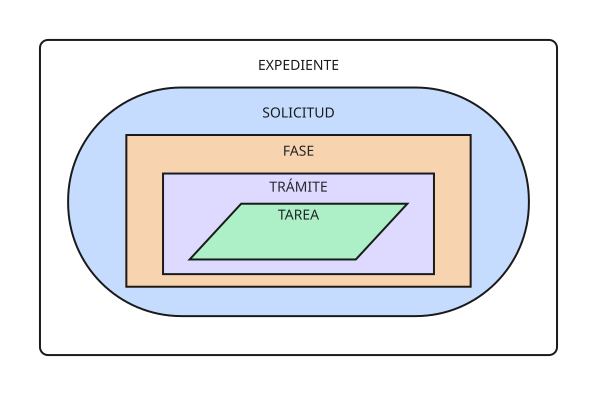

BDDAT
Gestión de expedientes de
instalaciones de alta tensión
Servicio de Energía de Cádiz · Consejería de Industria, Energía y Minas

El expediente y el procedimiento
Cada solicitud en su sitio. Un sitio para múltiples solicitudes.

Expediente
El contenedor único ligado a un proyecto físico.
- Transporte
- Distribución
- Distribución cedida
- Renovable
- Autoconsumo
- Línea Directa
- Convencional
- Otros
Solicitud
El acto administrativo que se tramita sobre el proyecto.
- AAP — Autorización Administrativa Previa
- AAC — Autorización Administrativa de Construcción
- DUP — Declaración de Utilidad Pública
- AAE Provisional — Autorización de Explotación Provisional
- AAE Definitiva — Autorización de Explotación Definitiva
- AAT — Autorización de Transmisión de Titularidad
- RAIPEE Previa / Definitiva
- RADNE — Inscripción en Registro de Autoconsumo
Fase
Contenedor de trámites con resultado propio.
- Análisis de Solicitud
- Admisión a Trámite
- Consulta al Ministerio
- Compatibilidad Ambiental
- Consultas a Organismos
- Información Pública
- Instrumento Ambiental Externo
- AAU/AAUS Integrada
- Resolución
Trámite
Agrupa las tareas de un mismo acto administrativo.
- Análisis Documental
- Requerimiento de Subsanación
- Consulta Separata
- Anuncio BOE / BOP / Prensa
- Recepción de Alegación
- Elaboración
- …
Tarea
La tarea es la mínima unidad de trabajo. La acción concreta que realiza el tramitador. Hay siete tipos atómicos:
- ANALIZAR
- REDACTAR
- FIRMAR
- NOTIFICAR
- PUBLICAR
- ESPERAR PLAZO
- INCORPORAR
Cuaderno de bitácora
El cuaderno de bitácora es un sistema de registro de acciones relevantes que incluye eliminaciones de registros, desactivaciones de usuarios o entidades y desviaciones respecto a las reglas de tramitación.
Las desviaciones incluyen el qué, quién y cuándo, así como la justificación.
El cuaderno de bitácora es auditable por el supervisor.
Estructura en capas
Las tareas pertenecen a un trámite, los trámites pertenecen a una fase, las fases pertenecen a una solicitud y el expediente tiene diversas solicitudes.

Todos los documentos, en su sitio
Un pool único por expediente, ligado al procedimiento

Gracias